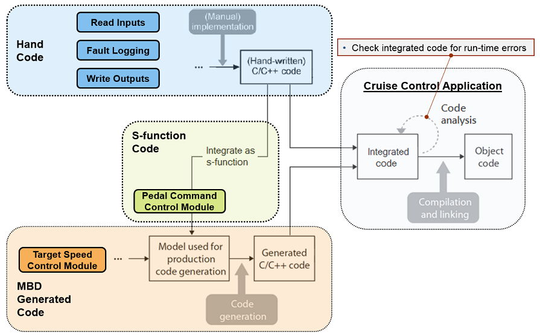
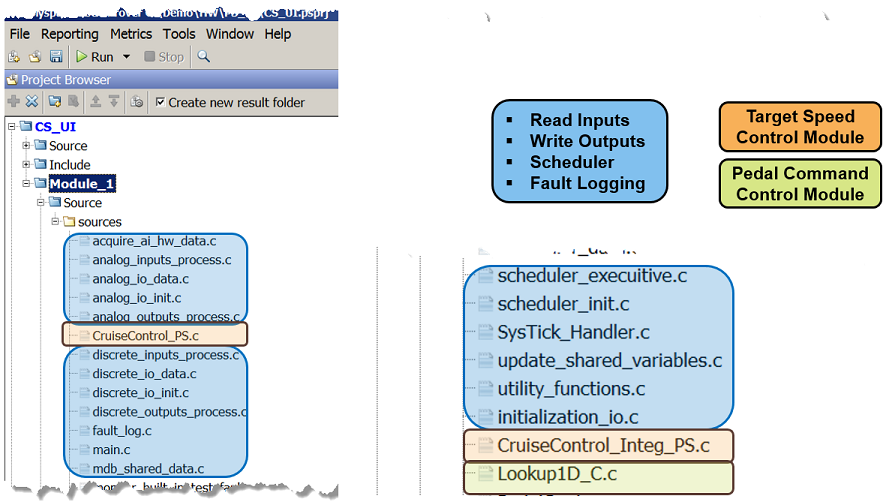
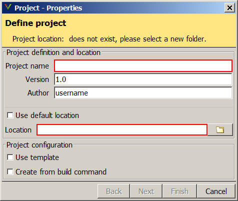
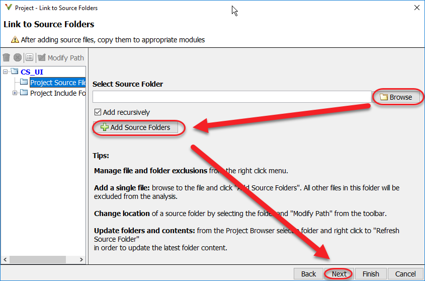
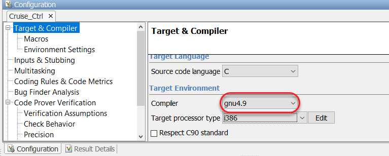
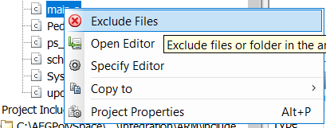
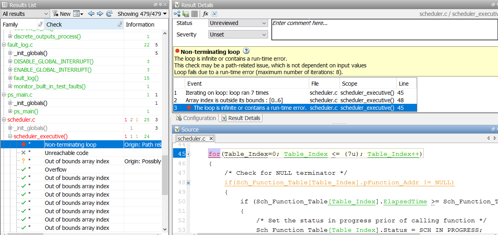
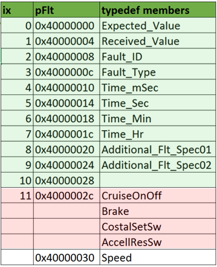
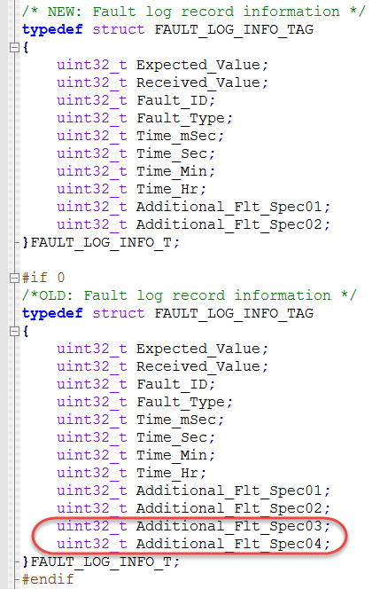
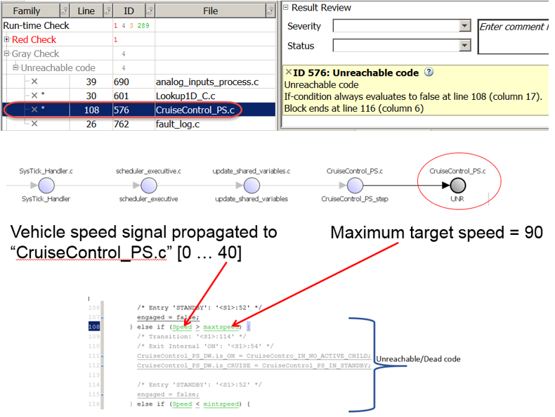

Step 7: Integration Code Verification
Contents
Introduction
In most embedded system, the final product contains hand and auto gen code that will be downloaded into processor. In this workshop will go throught an example of simple scheduler, analog and discrete IO’s processing, and fault log. We will be use Polyspace Code Prover static analysis tool to detect run time error on the integrated (hand and auto gen) code.
The following diagram describes the recommendation usage of Polyspace in the embedded system development where hand and auto generated code integration is applicable.

Verification and Validation Tools Used
- Polyspace Code Prover
Static verification
Creating Polyspace Code Prover project that contains hand code, S-Function, and Auto Generated Code.

Provide name in the “Project Name” and “Location” fields. The location field is where the results will be stored. Keep the remaining default options and click "Next".
Add the C source code files (.c) to the project and specifiy the folders containing include (.h) files in the include paths. Add recursively only if there are subfolders containing source and include files you need to compile the source files.


Most compiler specific language extensions are recognized by Polyspace by selecting compiler vendor and dialect in the setup. For exotic extensions, there are extension hooks in the product that allow you to verify even the most extension laden source code. Select the gnu4.9 dialect in the compiler option for this example.

Omit the main.c from the verification initially by right-clicking it and selecting "Exclude Files".

Save the Polyspace configuration and run.
In the next section we will review the Polyspace results. Make hand code chnages and re-run Polyspace.
Reviewing Code Prover results
This is a run-time error in the hand code. Please investigate the root cause of the issue.
Modify the scheduler file at line 16 from “<=” to “<” and re-run Code Prover.

A non-terminating loop caused the cruise control to power off during fault testing.

The fault_log function is called when a failure occurs during normal processing. The summary of this function is to copy and store the current fault content into a global circular buffer.
- The calling functions pass an address of variable. The type of the variable is ‘FAULT_LOG_INFO_T’ (containing 10 32 bit fields).
- This function takes as an input type of ‘FAULT_LOG_INFO_T’
- At line 22, this function casts its input argument to pointer to u32
- At line 25, this function validates the circular buffer index counter before using it (at line 33).
- At line 34, this function copies the current fault contents (12 elements!) into a global variable buffer (FaultInfoElement)
- At line 37, this function clears the current fault content to 0.
- At line 38, this function increment the pointer by 1.
What is the issue? – The memory locations between Fault Log info and the Shared data (variables those are shared between hand and auto generated code) are adjacent. Because of that, this function writes into the next memory (cruse on/off switch and other shared variables) on the 11th iteration. (i.e: at line 34 this function clears the pointers content to 0, at the 11th iteration this function is clearing all the shared variables).
This figure illustrates simulates the memory overlap between shared memory data and fault log info:

What is the fix? This function should only increment 0..9 not 0..11, because the ‘FAULT_LOG_INFO_T’ only contains 10 elements, not 12.
What changed?
Note between “NEW” and “OLD” fault log typedef structure below: This source line is located in "bit.h" in the "include" folder.

Let’s look at the second issue that is causing the target not to exceed 40MPH.
We will be using Polyspace to navigate and identify the root cause of the issue.

Summary
Performing early individual module unit testing will prevent defects getting into the system. What make the final product is the integration functionality of the system. Using a static analysis tool like Polyspace prevents run-time error getting into your system and saves troubleshooting time.
More information about Polyspace Code Prover Checks can be found using this link: http://www.mathworks.com/help/codeprover/ug/check-types.html
More information about Polyspace Bug Finder Checks can be found using this link: http://www.mathworks.com/help/bugfinder/defect-reference.html
When you are finished, close all models and files - or click here.
Please go to Step 8: Property Proving - click here